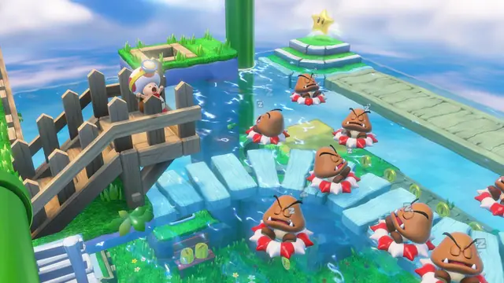
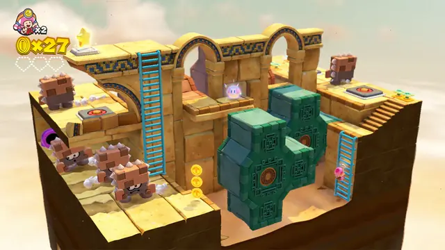
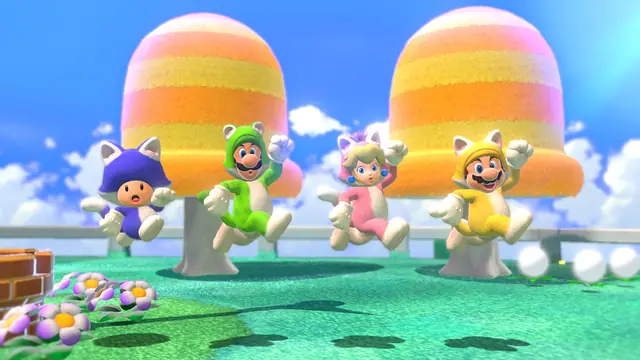
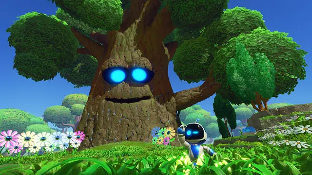
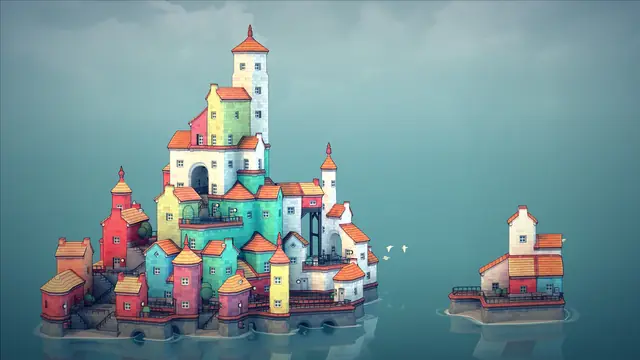
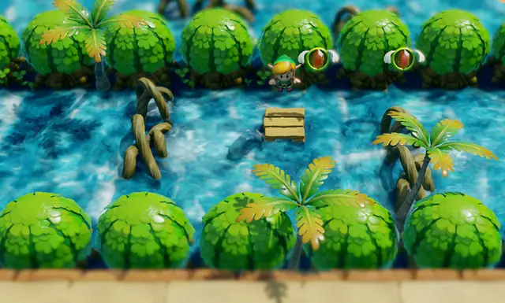
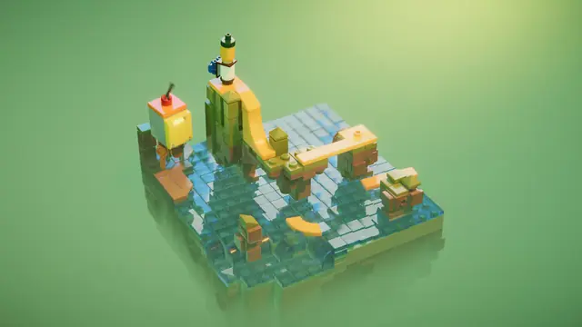
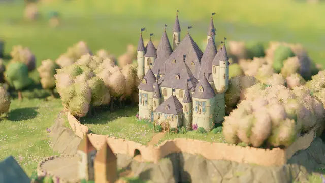
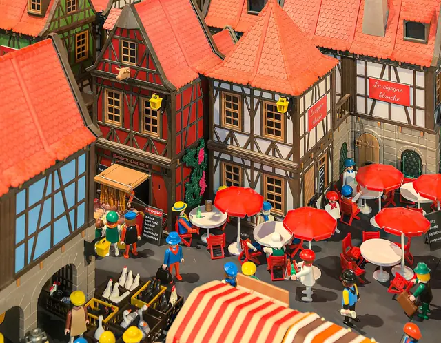

The feel
A toybox diorama is a whole level you could lift off the table. Captain Toad: Treasure Tracker grew from small, diorama-style levels for a hero who could not jump, self-contained worlds to be studied and puzzled out by turning a 3D camera.1 An early demo, starring Link, was convincing enough that Shigeru Miyamoto asked how the team meant to bring the dioramas into production: he thought they were pitching a physical product.2 For the 2019 Link's Awakening, graphic refining director Yoshiki Haruhana wanted players to feel they were peeking into a little diorama, with Link as a figurine about 10 cm tall.3
It works because toys ask to be touched. John Lasseter said Toy Story's characters moved like cartoons, "and yet I could touch them. They were plastic."4 Small size is part of the pleasure: Oskar Stålberg, who made Townscaper, says simply "I like those kinds of tiny worlds",5 and Anastasia Opara describes Tiny Glade as "more of a toy box for making dioramas".6
- tabletop
- glossy
- chunky
- toy-sized
- hands-on
- bright
Where it comes from
Computer animation found the look early. Lasseter's short Tin Toy led Disney and Pixar to a feature told from a small toy's point of view, and Toy Story (1995) worked within the medium's limits with characters that were cartoony and plastic at once.4 Real playsets had long shown small worlds of their own: Fisher-Price's Little People, first sold in 1959 and moulded in plastic since the 1960s, came with play sets of schools, airports and farms.7 In games, Shinya Hiratake's diorama stages at Nintendo became minigames in Super Mario 3D World (2013) and then a full game, Captain Toad: Treasure Tracker (2014),2,1 while Astro Bot Rescue Mission (2018) was built as an interactive diorama,8 the 2019 Link's Awakening imagined its island in miniature,3 and Townscaper (2020) and Tiny Glade turned the idea into building toys.9,6
Core elements
Diorama-sized levels
Each level is a small, self-contained set. Hiratake wanted Captain Toad's stages to be a sandbox: a small, contained world with a linear path and a hero who could not jump.1 He reasoned that taking away the jump would let him shrink his levels a great deal.2 Astro Bot Rescue Mission's art team rebuilt its platforms as reusable pieces that fit together at different angles, like toy blocks.8
Figurine scale
The world is built as if it existed in miniature. Link's Awakening imagined Link as a figurine about 10 cm tall, and its team held back detail that a toy of that size could not carry.3 Team Asobi looked at Astro as a real-life robotics product, a character you can take apart to see how his joints come together.10
Plastic and vinyl surfaces
Surfaces read as moulded plastic and soft vinyl. Team Asobi chose Astro Bot Rescue Mission's materials for a super-tangible feeling,8 and on Astro Bot's guest characters it replaced organic materials such as hair with vinyl.10 A clear coat, a second small highlight over the base material, is common on toys.11
Rounded edges and chunky forms
Edges are rounded and forms are thick. Malwina Czech chamfered most of her edges to get the soft plastic toy look of the Link's Awakening remake,12 and slight rounding catches the highlights a real object would show.13 Real toys are shaped this way too: Fisher-Price's Little People began as mostly cylindrical figures and grew wider as toy safety concerns arose in the 1980s.7
Saturated colour
Colours are strong and clean. Stålberg sums up Townscaper's colours as "a rainbow palette plus two extra greys and white basically".5 Saturation also helps the scale read: makers of fake miniatures often raise it to make a scene look close and small, and lowering it makes a scene look far away and large.14
An orbiting camera
The player often looks in from outside the set and turns it. Hiratake chose a weaker hero than Link for Captain Toad so that the player would focus on the geography and on turning the camera.1 A set seen from every side has no back to hide: when Czech opened her Link's Awakening scene to all views, every nook and cranny had to be polished.12
How to do it
Choose the toy's size
Decide how big the world would be as a real toy before you model anything. Link's Awakening's team imagined Link as a figurine about 10 cm tall and kept the detail to what that size could carry.3 Then make the whole stage fit on one screen: Captain Toad's team did this so that changing the camera angle became the way to play, which is how they ended up with miniature worlds.1
Block it out in plain shapes
Prove the level in plain blocks first. Team Asobi's designers built rough stages from plain blocks, and once those were fun the artists remade the platforms at high quality as reusable pieces that connect at different angles.8 Keep the hero's moves small: Hiratake reasoned that taking away the jump would let him shrink his levels a great deal and keep the world contained.2,1
Bevel the edges
Chamfer most edges, as Czech did for the soft toy look.12 Use 2 or more segments for a rounded edge, since the bevel's profile, from concave to convex, has no effect with fewer.15 Limit the bevel to edges sharper than a set angle so smooth surfaces stay untouched, and harden the normals so flat faces stay flat while the bevel shades smoothly into them.15 A shading-only bevel rounds corners without new geometry but can slow a render by 20%, and a bevel in the geometry is faster when it works.13
Set up the plastic
Lower the roughness for a toy plastic look.12 A baseline is roughness 0.1 for glossy plastic and 0.4 for matte plastic, with metalness at 0,16 on a scale where 0 is a perfect mirror and 1 blurs the reflection completely.11 Then add a clear coat, a second, smaller highlight on top, as on car paint and toys.11
Soften the sun
Light the set with a directional light as the sun and give it an angular size above 0. The real sun is about 0.5 degrees across, and any size above 0 makes shadows softer the further they fall from the object that casts them.17 These contact-hardening shadows are expensive, so keep them to a handful of large, bright lights.17
Darken the creases
Add ambient occlusion so less ambient light reaches the creases and the gaps between pieces. Bake it where you can: screen-space occlusion works, but nothing beats a well-baked map.11 Czech likes to push it a bit further for contrast.12
Raise the saturation
Turn the saturation up to make the set read as close and small; turning it down makes a scene look far away and large.14 Blur sends the same signal. A shallow depth of field makes even a full-size city look like a model, and a linear blur gradient added afterwards has a similar effect.14
Cheat sheet
- Scale
- Hero as a figurine about 10 cm tall3
- Level
- The whole stage on one screen, turned by the camera1
- Sun
- Angular size above 0, about 0.5° like the real sun17
- Shadows
- Contact-hardening, softer away from the caster17
- Palette
- Rainbow hues plus two greys and white5
- Saturation
- Raised, since lower reads as far away and large14
Do
- Check the look against a real model. When a real diorama of the game went on show at E3 2019, Haruhana felt it was a test of whether the game's graphics had achieved what the team set out to do.3
- Make nearly everything react to a touch. In Astro Bot Rescue Mission nearly every object responds to being touched or punched.8
- Give every object the same toy detail. Team Asobi gave each object a digital DNA, such as printed circuit board patterns and LED faceplates, and it gave the game a playful identity of its own.8
- Design the corners. Stålberg's rule is that what matters is what happens when things change: where one material meets another, or at the corner of a house or a roof.9
- Let the player watch it build. Tomasz Stachowiak calls Tiny Glade's self-arranging walls its most vital element, because it is tangibly pleasant to watch something being built up in front of your eyes.6
Avoid
- Fine surface detail. Czech kept small normal details off most props, and Link's Awakening's team avoided detail beyond what a 10 cm figurine could carry.12,3
- Cartoon timing carried straight into VR. Team Asobi found that exaggerated animations like those of classic cartoons did not work well in VR, and adjusting the timings took several rounds.8
- A set as colourful as its actors. Stålberg found that when the environment is very colourful and detailed, the gameplay pieces have to be even more colourful still.5
- Flat, even lighting. Czech's first attempt copied the game's lighting closely, and from a third-person view it looked uniform and boring, with no focus.12
Tools and tutorials
- Beyond Townscapers
Oskar Stålberg, the maker of Townscaper, speaking at the Sweden Game Conference in 2021.
- Rendering Tiny Glades With Entirely Too Much Ray Marching
Tomasz Stachowiak at the Graphics Programming Conference, on how Tiny Glade is rendered.
- Blender Manual: Bevel Modifier
Rounded edges with segments, an angle limit and hardened normals.15
- Godot: Standard Material 3D
Specular, roughness and the clear coat layer used for toys, explained.11
Palette
Sampled from the games: plastic red from the rubber rings in a Captain Toad water level, sky blue and soil brown from a Captain Toad cube, path yellow and hill green from Super Mario 3D World, roof orange and sea teal from Townscaper, and blossom pink from the trees of Astro Bot.
Feel the vibe
Listen
Bouncy and cheerful, for blocking out a world of glossy, rounded toys.
YouTubeBusy and playful company while you bevel and light a small hub world.
YouTubeCalm and unhurried, for slow work on a single tabletop scene.
YouTubeWarm and friendly, the mood a world of toys should give off.
YouTubeQuick and cheeky, a reminder that a toy world can be funny as well as neat.
YouTube
More references









Games
- Super Mario 3D World
Its courses are what one critic called shoeboxes: fully explorable 3D spaces with one set path to the goal pole.18 Captain Toad's diorama stages first shipped here, as minigames.2
- Captain Toad: Treasure Tracker
Study the small tunnels and pillars that Mario's 3D levels avoid because they block the view, and that this game turns into the fun.1
- Astro Bot Rescue Mission
A VR platformer built as an interactive diorama, where nearly every object reacts to touch.8
- The Legend of Zelda: Link's Awakening
The Game Boy island rebuilt as a diorama for a 10 cm figurine. Study how it keeps rich detail within what a toy that size could carry.3
- LEGO Builder's Journey
Brick building turned into a puzzle, built on the satisfaction of bricks clicking into place, and players have made real models of its scenes.19 Study how toy plastic reads up close.
- Townscaper
More of a toy than a game, in its maker's words. Study its palette and its corners.9,5
- Astro Bot
Study the LED eyes and the vinyl: its guest characters swap hair for toy materials.10
- Tiny Glade
Its makers call it a toy box for making dioramas. Study the walls that build themselves as you draw.6
Film, art and more
- Tin Toy
Lasseter's Oscar-winning short, which led to a feature told from a small toy's point of view.4
- Toy Story
The first computer-animated feature. Its toys move like cartoons and still look solid enough to touch.4
- Little People
Small, mostly cylindrical figures that came with play sets of schools, airports and farms.7
- Tilt-shift photography
Blur added to a photo of a real place makes it look like a model, and makers of these fakes often raise the saturation as well.14
Sources
- 1Where Captain Toad: Treasure Tracker came from
- 2Captain Toad: Treasure Tracker Was Almost A Zelda Game
- 3Behind the scenes: the visual style of The Legend of Zelda: Link's Awakening
- 4The Lasting Influence of 'Toy Story': How the Beloved Film Changed Animation
- 5Townscaper – the game which isn’t a game, but still sold 380,000 copies on Steam
- 6Tiny Glade Developers on Bevy, Proceduralism, Publishers & Cozy Games
- 7Little People Go Big: The National Toy Hall of Fame Announces its Newest Inductee
- 8Astro Bot Rescue Mission: Inside the Art and Animation of Japan Studio’s PS VR Hit
- 9How Townscaper Works: A Story Four Games in the Making
- 10The evolution of Astro Bot’s adorable character design
- 11Standard Material 3D and ORM Material 3D
- 12Recreating Animal Village Kitchen from The Legend of Zelda
- 13Bevel Node
- 14Using Blur to Affect Perceived Distance and Size
- 15Bevel Modifier
- 16Material references
- 173D lights and shadows
- 18Super Mario 3D World Review
- 19Building an artistic game out of tiny bricks: The making of LEGO Builder's Journey